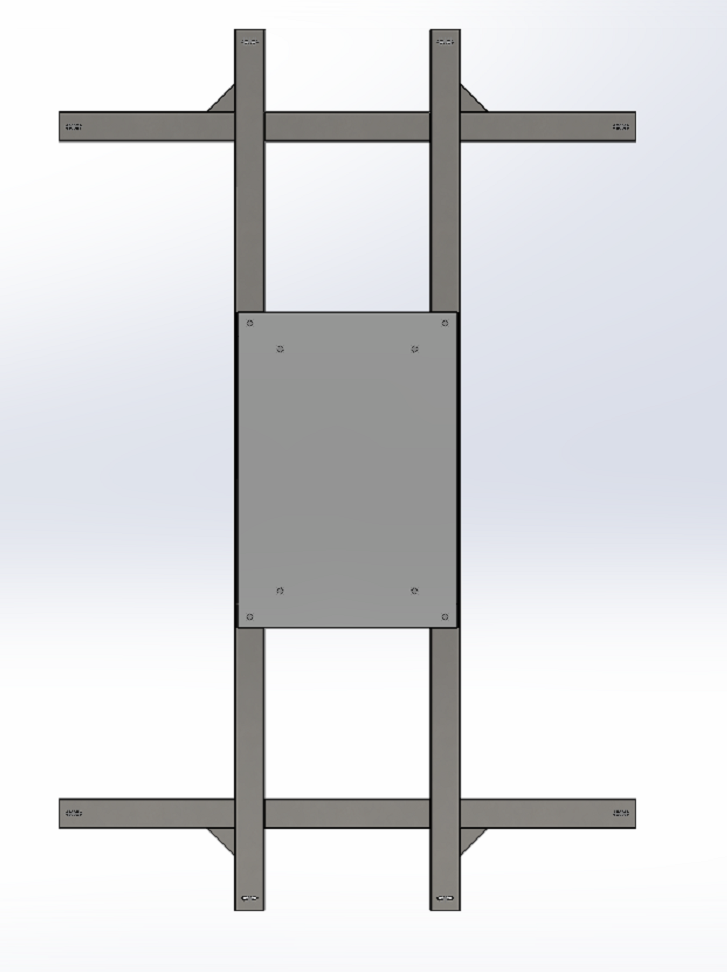
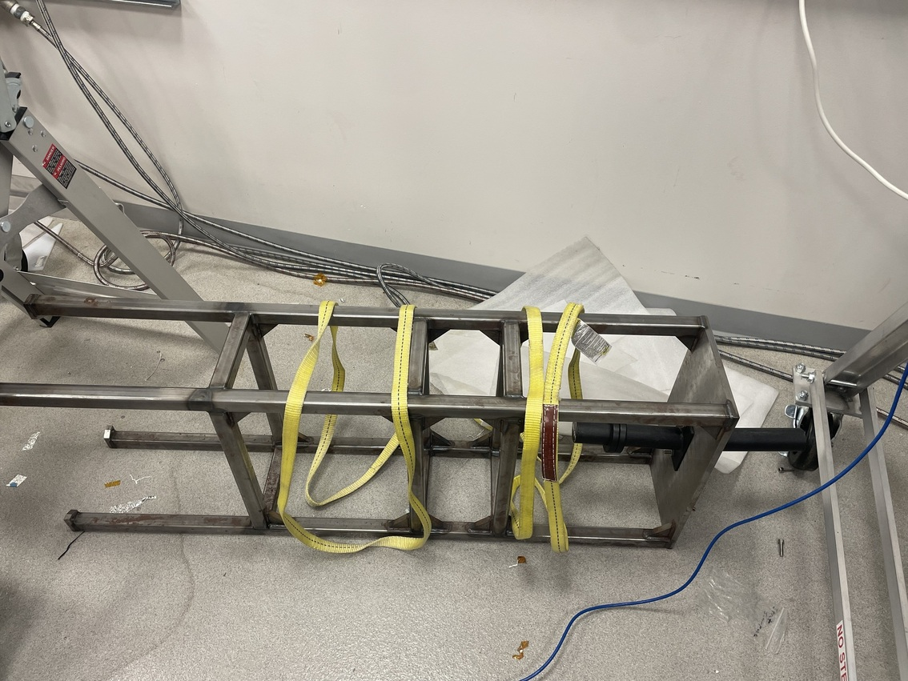
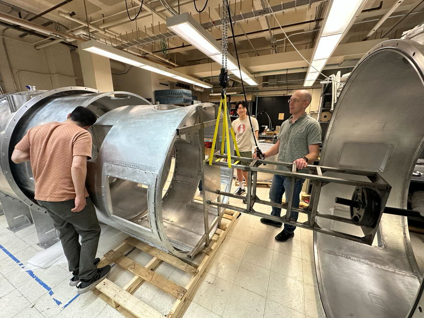

PrimeCam Counterweight Frame Design
Keywords: SolidWorks | Structural Engineering | Load-Bearing Mechanics | CCAT Observatory
Introduction to PrimeCam's Assembly Challenge
The Fred Young Submillimeter Telescope (FYST) is a major collaborative observatory located on Cerro Chajnantor in the Atacama Desert in Chile. While the observatory operates in South America, its primary camera component, PrimeCam, was assembled at Cornell University. As a researcher in the Niemack Group, I collaborated with a cross-functional team to assemble and structurally validate this state of the art instrument.
PrimeCam utilizes Kinetic-Inductance Detectors (KIDs) that require an extreme base thermal level of less than 100 millikelvin ($-273.05^\circ\text{C}$). To achieve this, the camera relies on multiple cooling units, including two Pulse Tube Cryocoolers and a Dilution Refrigerator. These cooling stages are enclosed within multiple nested vacuum shells, similar to Russian nesting dolls, for each temperature level. The outermost shell is a massive cylinder measuring roughly two meters in length and one meter in diameter. Each interior shell weighs hundreds of kilograms and requires absolute precision during handling. The outermost shell must maintain a perfect vacuum seal, and any damage to the ends or warping of the cylinder could cost hundreds of thousands of dollars and set the project back by years.
Due to PrimeCam’s intricate design, assembly required us to start from the outside and sequentially insert the interior shells. This presented a significant mechanical hurdle. While our lab was equipped with a crane capable of lifting the massive components, the crane could not maintain its grip once a shell was being inserted into the exterior housing. With edge to edge clearances of only 2 to 3 inches between the nested cylinders, we needed a precise, custom tooling solution to safely guide and support the shells into place.
Mechanical Design
To solve this assembly bottleneck, I co-designed a custom counterweight frame alongside PhD candidate Rodrigo Freundt. Using SolidWorks, I engineered an adapting frame specifically to fit the 4K shell, which alone weighed over 100 kilograms. Because the frame had to safely cantilever this immense weight alongside the counterweight itself, material selection was critical. I utilized steel bars for the primary structural members due to their superior yield strength and resistance to shear stress compared to aluminum. However, we integrated a thick aluminum plate to mount the larger counterweight system onto the adapting frame, reinforced with structural gussets to maximize load stability.


A primary mechanical concern was protecting the delicate 4K shell. Because the shell was machined from softer aluminum, the sheer force of a 100+ kg cantilevered load threatened to strip or deform its tapped mounting holes. To mitigate this risk, the adapting frame was designed to maximize load distribution, utilizing eight separate mounting screws on the 4K shell to safely split the mechanical strain. Additionally, I implemented slotted mounting holes on the frame to provide geometric versatility and tolerance relief in case the massive aluminum shells possessed slight manufacturing deviations from a perfect cylinder.
Implementation and Results
The custom frame performed exactly as engineered, allowing our team to safely and seamlessly add and remove the 4K shell from the PrimeCam assembly. The load distribution strategy was highly successful, with the aluminum tapped holes sustaining the full weight of the shell and counterweight system without any stripping, warping, or damage.

Ultimately, this project provided invaluable hands-on experience in load-bearing mechanical design using SolidWorks. It highlighted the importance of structural risk mitigation, material stress analysis, and cross-functional collaboration when engineering support hardware for large-scale, high-stakes instrumentation.